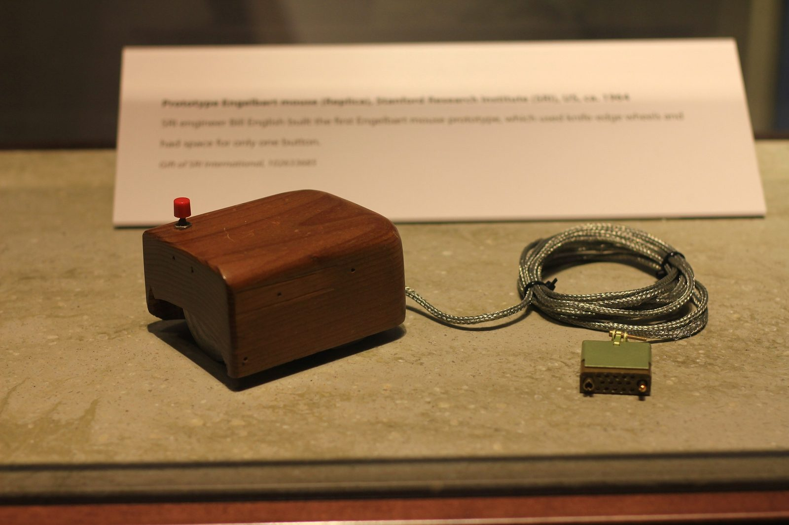
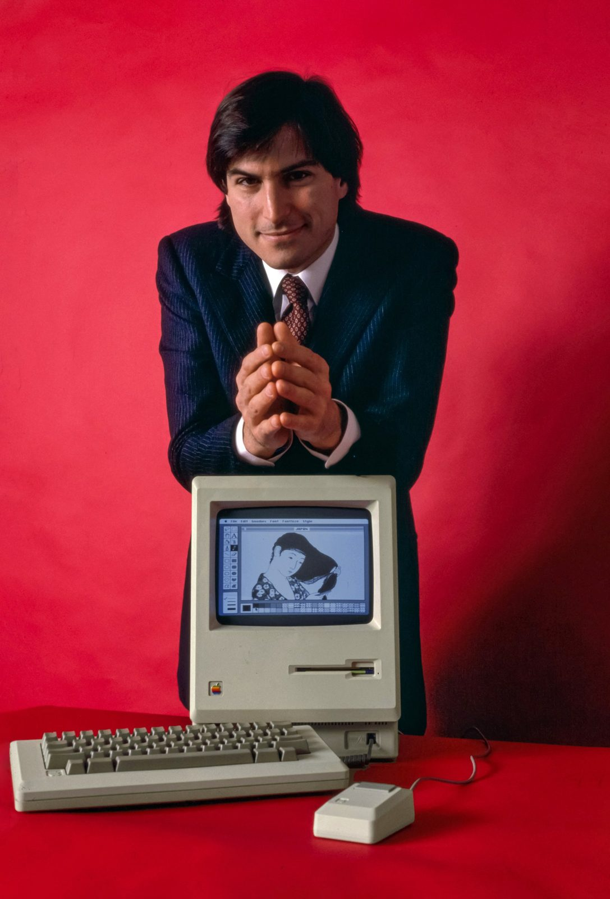

Unit 1 · Lesson 8
A computer for everyone
In 1968 one man showed the mouse, windows and video calls in a single afternoon. It took almost thirty more years to bring them into ordinary homes.
The story
On 9 December 1968, at a computer conference in San Francisco, Douglas Engelbart gave a 90-minute demonstration. He showed a mouse, text with links, windows side by side on one screen and a live video call. A journalist later called it "the mother of all demos".


In 1973, at Xerox's research centre in California (PARC), engineers built the Alto. It had a mouse, windows and a laser printer. Xerox used it inside the company and gave it to universities, but never sold it to the public.
Apple was founded on 1 April 1976 by Steve Jobs, Steve Wozniak and Ronald Wayne. People love the story of the garage, but Wozniak himself said in 2014 that "the garage is a bit of a myth": most of the design work was done elsewhere. On 24 January 1984 the Macintosh brought the mouse and windows to people who could buy it.


Microsoft made the operating system for most of the PCs built by other companies. With Windows, the same ideas, the mouse and the windows, reached cheaper machines. In the 1990s the personal computer (PC) became a normal object in many homes.
In many homes, but not in all. A computer cost a lot of money. Richer families and richer countries got them first, and boys had them in their bedrooms more often than girls. This was the first digital divide: the gap between people who have computers and people who do not. Schools and public libraries helped to close it.


The science
Inside the box
The box is not the CPU: the CPU is one small chip inside it. Every part has one job. The CPU follows the instructions: it is the cook. RAM is the workbench, fast but it forgets when the power goes. Storage (an SSD or a hard disk) is the pantry: it keeps everything. The motherboard is the big board that every part plugs into. The power supply turns mains electricity into the low voltage the parts need. Ports are the doors for cables: USB, the screen, the network.
- The cook = CPU core
- The metronome = clock (GHz)
- The countertop = cache
- The workbench = RAM
- The pantry = storage (SSD / HDD)
The GPU: many small cooks
A GPU (graphics processing unit) is a chip with thousands of small, simple cooks. Each one colours a few pixels, all at the same time. Games need it, and so does artificial intelligence (AI). In a gamer's PC the GPU is often the most expensive part.
- The cook = CPU core
- The metronome = clock (GHz)
- The countertop = cache
- The workbench = RAM
- The pantry = storage (SSD / HDD)


The operating system runs the machine
The operating system (OS) is the program that runs the machine for all the other programs. Windows, macOS, Linux, Android and iOS are operating systems. It has six jobs: it starts the machine; it shares the CPU between programs; it hands out space on the workbench (memory); it talks to the hardware; it keeps your files in order; and it gives you the screen, with windows and a pointer. Apps ask the OS, and the OS asks the hardware. In the kitchen, the OS is the head cook who opens up and gives everyone a place to work.
- The cook = CPU core
- The metronome = clock (GHz)
- The countertop = cache
- The workbench = RAM
- The pantry = storage (SSD / HDD)
System software or application?
System software works for the other software: the operating system and the drivers. A driver is a small program that tells the OS how to use one piece of hardware, like the Wi-Fi card or a printer. Applications (apps) work for you: a browser, Word, a game.
Check now
Quick questions. You see the answer at once.
Which part turns mains electricity into what the other parts need?
- the motherboard
- the power supply
- the GPU
Apple invented the mouse.
True or false?
Which of these is system software?
- a browser
- the Wi-Fi driver
- a game
Try it
This is an old desktop PC with the side panel off. Drag each label to its number, or click a label and then a number.
Paper version
An old desktop PC, opened. Find and name: 1 power supply (top left, the grey box with vents) · 2 power cables (red, yellow and black wires) · 3 motherboard (the green board on the back wall) · 4 ribbon cables (grey and flat: they carry data to the drives) · 5 expansion card (a board plugged into the motherboard, at the bottom) · 6 drive bays (metal cages for storage drives, top right) · 7 the CPU, taken out of its socket and left on the bench (bottom right).
Your turn
Exercises
From ★☆☆ (easy) to ★★★ (hard). Use a hint if you are stuck.
-
Exercise 1 ★☆☆
Match each part to its job.
- CPU — ?
- RAM — ?
- storage (SSD) — ?
- motherboard — ?
- power supply — ?
-
Exercise 2 ★☆☆
The whole box of a desktop computer is called the CPU.
True or false?
-
Exercise 3 ★★☆
Put these events in time order, oldest first.
- Apple is founded (1976)
- Engelbart's demo (1968)
- the Macintosh (1984)
- the Xerox Alto (1973)
-
Exercise 4 ★★☆
System software or application?
- Word — ?
- the Wi-Fi driver — ?
- Android — ?
- a game — ?
- Windows — ?
-
Exercise 5 ★★☆
Which of these is NOT a job of the operating system?
- sharing the CPU between programs
- keeping your files in order
- writing your homework for you
- talking to the hardware
-
Exercise 6 ★☆☆
How many jobs of the operating system are listed in this chapter?
-
Exercise 7 ★★☆
You switch on a laptop, open a browser and save a photo. Name four jobs the operating system did for you.
-
Exercise 8 ★★★
Wozniak said the Apple garage is "a bit of a myth". What does a story leave out when it starts "in a garage"? And who was left out of the first home computers?
In one sentence
A computer became everyone's when software made it easy, and prices made it possible.
Words of the chapter
- motherboard
- the big board that every part of a computer plugs into scheda madre
- power supply
- the part that turns mains electricity into what the other parts need alimentatore
- GPU
- a chip with thousands of small cooks for pixels and AI GPU (scheda grafica)
- port
- a door for a cable: USB, screen, network porta
- operating system
- the program that runs the machine for all the other programs sistema operativo
- driver
- a small program that tells the OS how to use one piece of hardware driver
- application
- software that works for you: a browser, Word, a game applicazione
- digital divide
- the gap between people who have computers and people who do not divario digitale